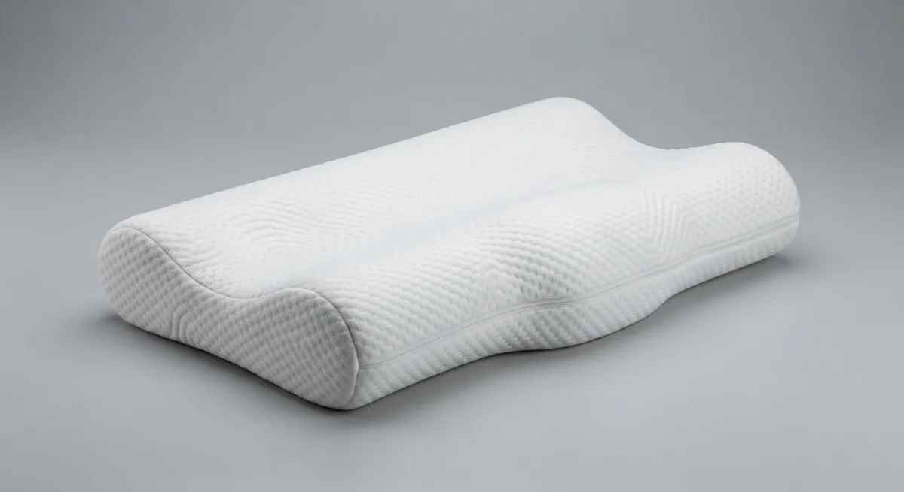

Oreiller ergonomique cervical à mémoire de forme
Pour dormir sur le dos ou le côté
- Un soutien cervical marqué grâce à la forme en vague
- Deux hauteurs au choix selon votre carrure
- Une housse tricot 3D qui laisse respirer
offerte 🌙 100 nuits
d'essai 🛡️ Garantie
3 ans
🔒 Paiement sécurisé : CB, Visa, Mastercard, Apple Pay, Google Pay
Matériaux et dimensions
- Dimensions : 60 × 35 cm
- Hauteur : 10 ou 12 cm
- Fermeté : Moyenne-ferme
- Forme : Ergonomique en vague, deux bourrelets
- Housse : Tricot 3D respirant, fermeture éclair, lavable à 40 °C
- Garantie : 3 ans
Entretien
Ouvrez la fermeture éclair et retirez la housse. Lavez-la en machine à 40 °C, puis séchez-la à l'air libre. La mousse ne se lave pas : aérez-la régulièrement.
Livraison et retours
Préparation sous 24 à 48 h ouvrées, livraison en 3 à 5 jours ouvrés en France métropolitaine, avec suivi. L'oreiller arrive compressé sous vide : laissez-le reprendre sa forme quelques heures avant la première nuit.
Essai de 100 nuits
Dormez avec votre oreiller jusqu'à 100 nuits. S'il ne vous convient pas, nous organisons le retour gratuitement et vous remboursons intégralement.
Pourquoi choisir L'Ergonomique ?
Vous vous réveillez avec la nuque raide ? L'Ergonomique épouse la courbe naturelle de vos cervicales pour garder la tête, le cou et la colonne dans l'axe toute la nuit.
Une nuque enfin soutenue
Le bourrelet avant remplit le creux de la nuque, le creux central accueille la tête. Résultat : les muscles du cou n'ont plus à compenser pendant la nuit.
La bonne hauteur pour vous
10 cm pour les dormeurs sur le dos ou les carrures fines, 12 cm pour les dormeurs sur le côté ou les épaules larges.
Une mousse qui garde sa forme
La mousse à mémoire de forme reprend lentement sa forme au réveil. Pas besoin de retaper l'oreiller chaque soir.
Réversible
Deux bourrelets de hauteurs différentes : retournez l'oreiller si vous voulez un soutien plus léger.
L'Ergonomique selon votre position de sommeil
Voici comment l'utiliser, et dans quels cas un autre modèle vous conviendra mieux.
Sur le dos
IdéalPosez la nuque sur le bourrelet haut et la tête dans le creux. C'est la position pour laquelle cette forme a été pensée.
Sur le côté
IdéalEn hauteur 12 cm, l'oreiller comble l'espace entre l'épaule et la tête et garde le cou dans l'axe de la colonne.
Sur le ventre
DéconseilléDéconseillé : la vague relève trop la tête. Préférez Le Classique, plus bas.
Oreiller à mémoire de forme ou oreiller classique ?
Ce qui change quand on remplace un oreiller en plumes ou en fibres par L'Ergonomique.
| Critère | L'Ergonomique | Oreiller en plumes ou fibres |
|---|---|---|
| Maintien de la nuque | Vague qui remplit le creux cervical | Aucun, la tête s'enfonce |
| Alignement tête / colonne | Maintenu toute la nuit | Varie à chaque mouvement |
| Hauteur | Au choix : 10 ou 12 cm | Unique |
| Au fil de la nuit | Garde sa forme | S'aplatit, à retaper |
| Entretien | Housse lavable à 40 °C | Souvent à laver entier |
Avis clients
Les premiers avis arrivent bientôt. Vous avez acheté L'Ergonomique ? Partagez votre expérience après quelques nuits.
Questions fréquentes sur L'Ergonomique
Quelle hauteur choisir : 10 ou 12 cm ?
Prenez 10 cm si vous dormez surtout sur le dos ou si vous êtes de petit gabarit. Prenez 12 cm si vous dormez sur le côté ou si vous avez les épaules larges. En cas de doute, vous pouvez échanger pendant l'essai de 100 nuits.
Un oreiller cervical aide-t-il contre les douleurs de nuque ?
Un bon soutien aide à garder la colonne alignée et à relâcher les muscles du cou pendant la nuit. Il ne remplace pas un avis médical : si vos douleurs persistent, consultez un professionnel de santé.
Combien de temps faut-il pour s'habituer à un oreiller à mémoire de forme ?
Comptez généralement 3 à 7 nuits, le temps que votre nuque s'habitue à un nouveau maintien. C'est pour ça que vous disposez de 100 nuits d'essai.
L'oreiller a une odeur au déballage, est-ce normal ?
Oui, c'est fréquent avec une mousse livrée sous vide. Retirez la housse et laissez l'oreiller aérer 24 à 48 h dans une pièce ventilée : l'odeur disparaît.
L'oreiller arrive compressé, va-t-il reprendre sa forme ?
Oui. Sortez-le de son emballage et laissez-le à l'air libre : il reprend son volume en quelques heures, et complètement en 24 h.
La housse est-elle lavable en machine ?
Oui. Ouvrez la fermeture éclair, retirez la housse et lavez-la à 40 °C. Séchez-la à l'air libre. La mousse, elle, ne se lave pas : aérez-la régulièrement.
Quels sont les délais de livraison ?
Votre commande est préparée sous 24 à 48 h ouvrées, puis livrée en 3 à 5 jours ouvrés en France métropolitaine. La livraison est offerte et vous recevez un numéro de suivi.
Comment fonctionne l'essai de 100 nuits ?
Dormez avec votre oreiller jusqu'à 100 nuits. S'il ne vous convient pas, contactez-nous : nous organisons le retour et vous remboursons intégralement.